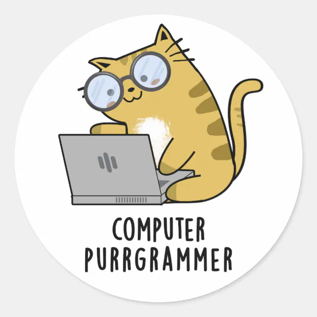

Olá
Nessa aba, estarei me apresentando.
Olá etequianos! Meu nome é Oswaldo, sou estudante do ensino médio integrado ao curso técnico em Recursos Humanos e do técnico em Informática. Sou apaixonado pela computação, desejo ingressar na Unicamp em Engenharia de Computação, continuando na área de Informática em desenvolvimento de sistemas.
Tomei o desafio de programar esse blog com ferramentas web, as linguagens de marcação HTML e CSS, e a linguagem de programação JavaScript, mesmo não gostando do que chamamos de Front-End (programação web), estarei nesse blog, falando de diversos assuntos relacionados a informática, incluindo Back-End (C# > Front-End).
Sobre o nome do blog.
"BitLover", junção de duas duas palavras:
Bit: Menor unidade da informação.
Lover: Amante, aquele que ama.
Juntando as duas palavras, Amante de bit! Em referência ao gostar de informática. Mesmo que pareça óbvio, é um nome que irá refletir o teor dessa página, de falar sobre informática e o que ela agrega no nosso dia a dia, seguindo o príncipio que o blog sempre informa algo.
